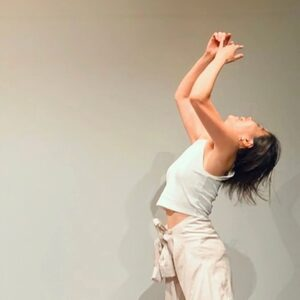
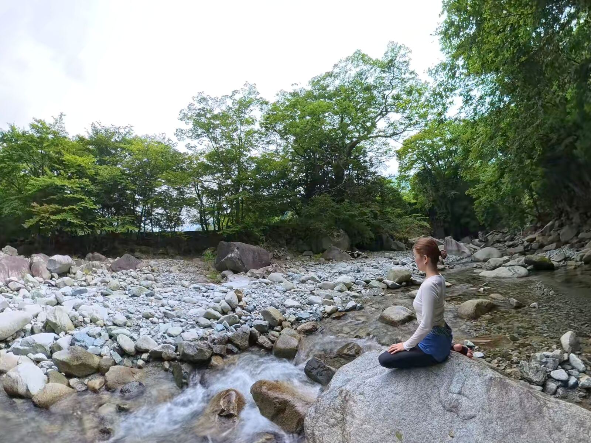
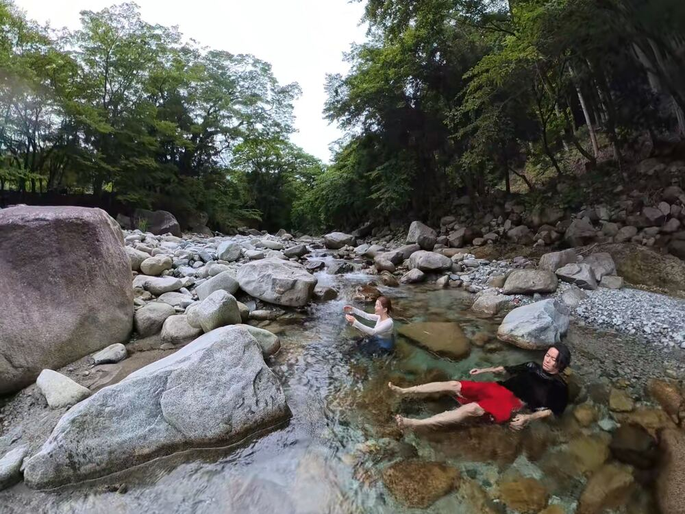
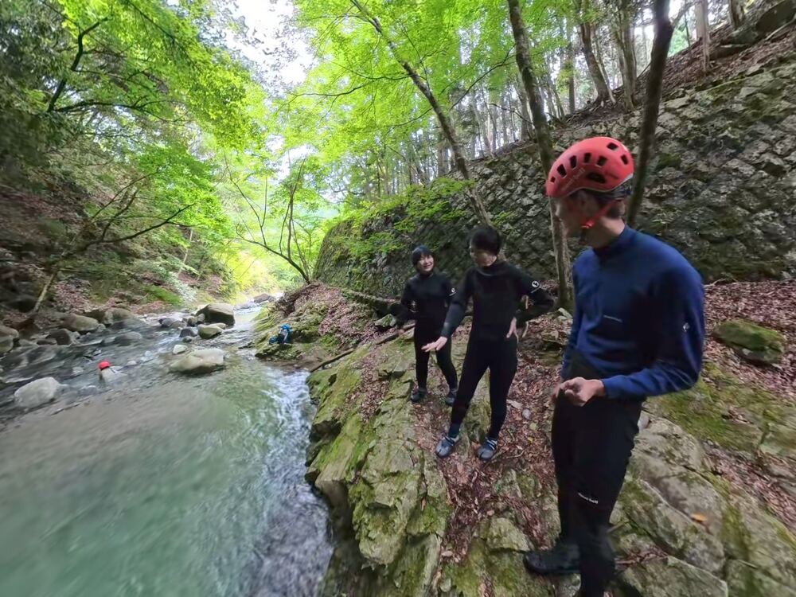
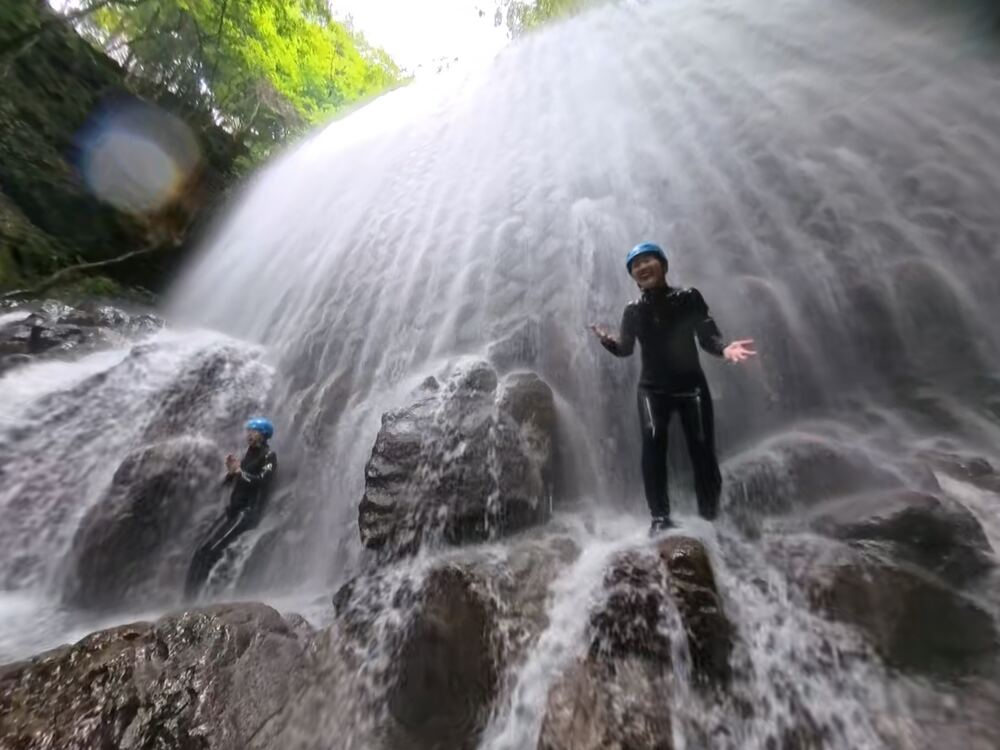
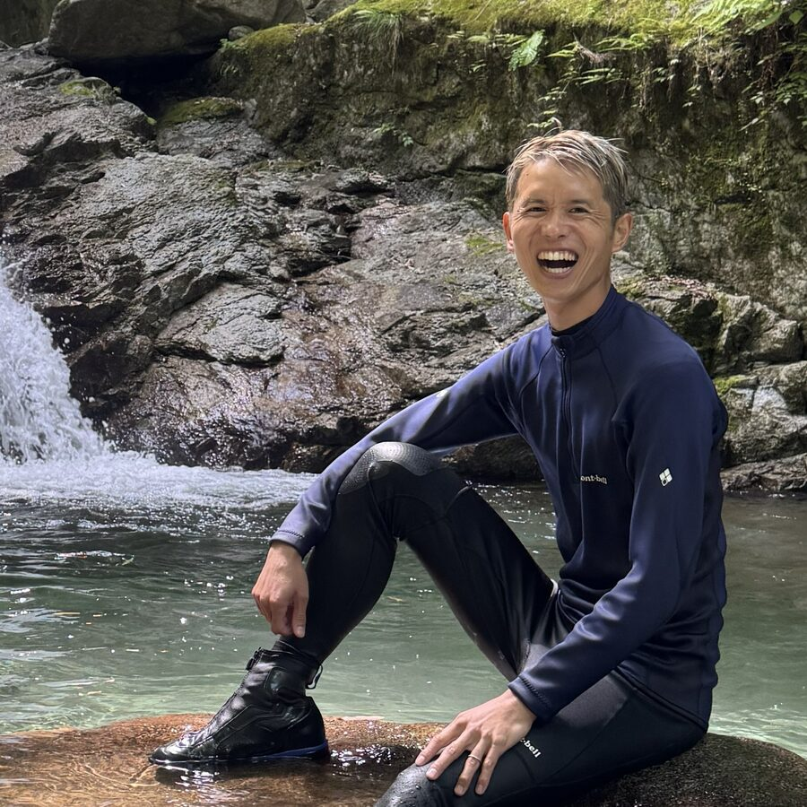
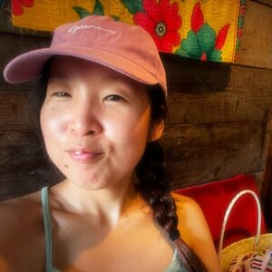
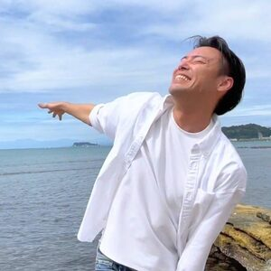
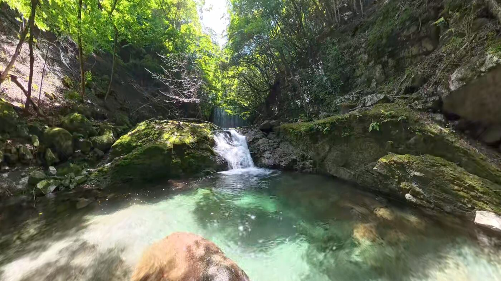

「自分の奥からの衝動と躍動で、めちゃくちゃ遊んだ。身体ごとの気づきが大きかった！」
おもいっきり、身体ごと、まるごと、全身全霊感じてきました。
これまで歩いてきた道のり、すべてここに集約できる！！っていうくらい、身体ごとの気づきが大きくて。
自分の奥からの衝動と躍動で、めちゃくちゃ遊んだ。
ありがと〜〜〜ありがと〜〜〜！

NPO法人代表 なおみさん
Playful Water Walking
神奈川県西丹沢の美渓で過ごす、
1DAY川遊びリトリート
仕事、子育て、誰かのための忙しい毎日。
自分の喜びが分からない。
何がしたいのか分からない。
「こう生きる」って決めたはずなのに
不安になって
自信がなくなって
自分がゆらぐ。
そんなとき、
「こうすべき」
「ああすべき」と、
私たちの頭はやかましく、
未来を予測しようとするけれど、
考えるよりもずっと深く、
身体は大切なことを分かっている。

ひんやりとした水の心地よさの中で、
身体の声にただ耳を澄ませる。
無邪気にはしゃいで遊び呆けて
自分の真ん中を思い出す。
どう生きるかなんて考える必要はない。
川に浸って、身体を感じて
川で遊んで、楽しいを味わう。
それだけで、
自然が、
あなたの身体が、
必要なことを教えてくれる。
必要なことは、その感覚を信頼し続ける勇気だけ。
この夏、至高の川遊び体験を。
PROGRAM
神奈川県西丹沢の美しい渓流で行う川遊びリトリート。
プログラムは、心地のよい河原でのチェックインからスタート。
川の流れを感じながら、水の冷たさ、心地よさ、身体感覚に耳を澄ませます。
その後、ウェットスーツに着替えて、渓谷を歩く沢歩きへ。
滝に打たれたり、飛び込んだり、ダイナミックな川遊びを満喫しましょう。

Practice 1
身体の声というけれど、大切なのは違和感や心地よさなど、微細な身体感覚。
その感覚を捉える体験をします。
川に身体を浸したときに、思わず「冷たい！」と思う、叫ぶ。
それは身体の声なのか？
怯えているのはどこなのか？
繊細に感じながら、思考と身体感覚を区別する練習をしてみましょう。

Practice 2
挑戦をするときに、自分を強いる必要はなくて、心地よく身体が流れる場所を探すことが重要。
飛び込む岩の淵に立ちながら、怖さを感じてみる。
怖過ぎないか？息を止めないか？
怖さもあるけれど、リラックスして楽しめるところはどこなのか？
その範囲を探してみましょう。

Practice 3
やりきってやりきって遊び切った先に、きっと開ける自分の感性がある。
少人数制のツアーで時間はたっぷり取っています。
何度も川に流されて、何度も水に浸って、何度も飛び込んで、「もう満足！！！」と言い切れるまで、川遊びを満喫しましょう。
SCHEDULE
10:00
小田急線新松田駅南口集合、ガイドの車で現地へ
10:45
現地到着、水着に着替え
11:00
近くの河原でチェックイン
11:45
ウェットスーツに着替え、渓流に移動
12:00
川遊び開始
13:00
川辺でお昼ご飯
15:00
川遊び終了
15:30
着替え後、チェックアウト
15:45
現地出発
16:30
小田急線新松田駅解散

GUIDE
1991年生まれ、35歳。エンジニアを辞めて、川遊びのガイドになりました。
エンジニアの頃、平日は会社のため、休日は子どものため、そんな風に過ごしていたら、何が自分の喜びなのか、いつの間にか、分からなくなっていました。
そんな自分を変えてくれたのは、西丹沢の美しい川。ここで、遊びに遊んで遊び呆けたことで、自分の感性、何が好きで何が嫌いか？何をやったら満たされるのか？そんな感覚が取り戻されていきました。
この体験を共有したくて、川遊びのプログラムを始めました。ぜひ一緒に川で遊びましょう。
VOICE
おもいっきり、身体ごと、まるごと、全身全霊感じてきました。
これまで歩いてきた道のり、すべてここに集約できる！！っていうくらい、身体ごとの気づきが大きくて。
自分の奥からの衝動と躍動で、めちゃくちゃ遊んだ。
ありがと〜〜〜ありがと〜〜〜！

NPO法人代表 なおみさん
わたしの中には、大きく分けて３つの声があるようだった。
胸の動きや声のボリュームが大きいから、それを「わたし」として表現していたけれど…『それって、本当？てかこんな下半身（肚）どっしり静かじゃん…😦』
ずっと、あそぶように生きていたい。
そうずっとおもっているのに思うようにならなくて、試行錯誤探求実践したきた中で、「感性のまま自由に生きていい。」そんな希望が外側から、そんな願いが内側からあらわれてくれた。
世界にすぐに放ちたくなるほどの願いがある。
その願いに、在る。立つ。震える。生きている！

セラピスト あやかさん
めっっちゃ楽しかった！！ただ川遊びを楽しむだけじゃなくて、身体の感覚を微細に感じていく時間。
川が冷たい！これは思考が冷たいと言ってる？身体はどう感じてる？川に飛び込むの怖い！高い所に立った時の感覚、落ちてる時の身体の感覚、川に入った時の感覚、2回はどう？思考が怖いと言ってる？微細に感じる。
川を歩いている時に、身体は何をしたいって言ってる？どこを歩きたい？そうやって時間を過ごしていたら、身体に滝の水が流れてる感覚になって、すごく心地よい状態になった！
身体から出るエネルギーが広がっていく感じ。
この感覚で日々いきていく。

ダンスカンパニー代表 たくろうさん
FAQ
お一人でのご参加、大歓迎です。少人数制で参加者間の交流も重視していますし、一緒に川で遊ぶと不思議な一体感が生まれます。むしろ、日常の関係性（仕事や家族の役割）から一歩離れた場所で、ただ「わたし自身」を感じるためにも、お一人でのご参加はとてもおすすめです。
大変恐れ入りますが、当プログラムは高校生以上の方を対象としております。コース自体は小学生でも歩ける安全な場所ですが、このリトリートは「大人が日常の役割をオフにして、自分自身を省みること」を何より大切にしているためです。もしお子様と一緒に川遊びを楽しみたい場合は、同じルートで子ども向けツアーを行っている信頼できる事業者さんをご紹介できますので、お気軽にお問い合わせください！
全く問題ありません。安心してご参加ください。使用する沢は足が着かない場所がほとんどありませんし、足のつく浅い場所からゆっくりスタートします。泳げない方や不安な方には、ライフジャケットも貸し出しますので、安全に楽しんでいただけます。
多少の雨であれば開催しますが、増水の可能性があるなど、危険が予測される場合は安全を最優先して中止とさせていただきます。その場合、キャンセル料は一切かかりませんのでご安心ください。開催の判断は前日の19時までに個別にご連絡いたします。
川の水はひんやりとしていますが、保温性の高いウエットスーツをご用意していますので、多くの方が問題なく楽しんでいらっしゃいます。また、寒さが不安な方には、川に入る時間を短くしたり、体を温める運動を取り入れたりと柔軟に対応しています。心から「遊ぶ」ためには、安心の土台が必要不可欠です。不安なことは何でも事前に教えてください。
使用しているフィールドは小さく浅い川なので、激流に流されるような危険はほとんどありません。ただ、整備された人工の道ではないため、濡れた岩の上で転ぶ・滑るなどのリスクはあります。専用の装備をお貸しし、歩き方のレクチャーも丁寧に行いますが、安全確保のため、腰痛を抱えている方や足腰の筋力に強い不安がある方、妊娠中の方の参加はご遠慮いただいております。
めったに出会うことはありませんが、野生のフィールドであることをご理解ください。プログラムを行うエリアは道路や登山道に隣接しており、人の往来が比較的多いため、私自身もこれまでに遭遇したことはありません。ただし、クマが生息している山域であることは確かですので、「100%絶対に遭遇しない」と言い切ることはできません。ご不安な場合はいつでもご相談ください。
DETAILS

少人数制のため、ご予約はお早めに。